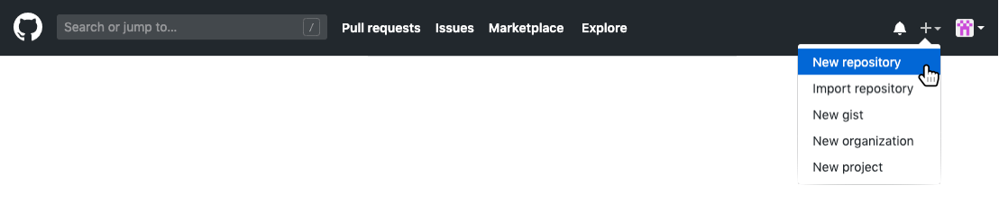
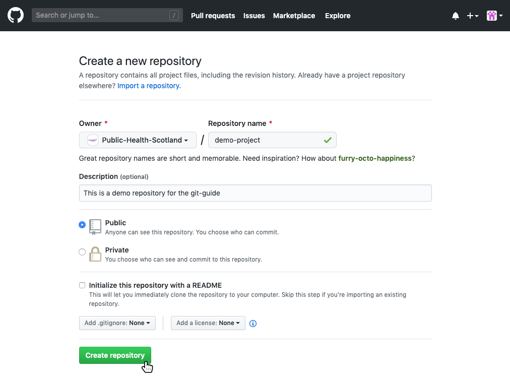
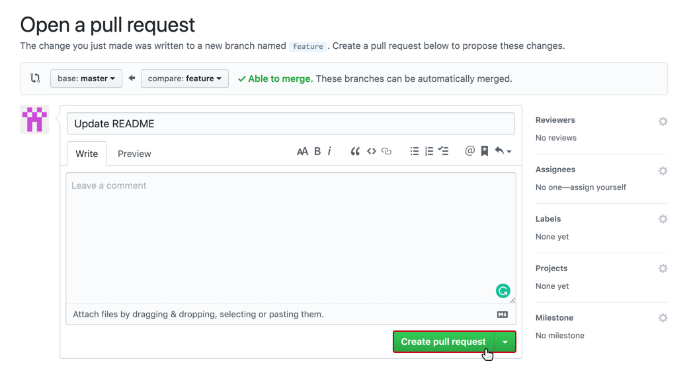

3 GitHub

Version control really comes into its own when we begin to collaborate with other people. We already have most of the machinery we need to do this; the only thing missing is to copy changes from one repository to another.
Systems like Git allow us to move work between any two repositories. In practice, though, it’s easiest to use one copy as a central hub, and to keep it on the web rather than on someone’s laptop. Most programmers use hosting services like GitHub, BitBucket or GitLab to hold those master copies. Here, we’ll explore GitHub.
GitHub is a Git hosting repository that provides users with tools to ship better code through command line features, issues (threaded discussions), pull requests, and code review. GitHub builds collaboration directly into the development process. Work is organised into repositories, where users can outline requirements or direction and set expectations for team members. Then, using the [GitHub Flow], developers simply create a branch to work on updates, commit changes to save them, open a pull request to propose and dicsuss changes, and merge pull requests once everyone is on the same page. See GitHub Workflow for more details.
3.1 GitHub Workflow

This is our recommended workflow. The workflow is branch-based and involves keeping the master branch clean and ‘production ready’/fully-functional at all times.
- Create a branch - topic/per-person branches created from the master allow teams to contribute to many parallel efforts. Short-lived topic branches, in particular, keep teams focussed and results in quick ships.
- Add commits - these are snapshots of development efforts within a branch and create safe, revertible points in the project’s history.
- Open a pull request - pull requests publicise the project’s ongoing efforts and set the tone for a transparent development process.
- Discuss and review code - teams participate in code reviews by commenting, testing, and reviewing open pull requests. Code review is at the centre of an open and participatory culture. Pull requests should be approved by at least one collaborator - we recommend you assign a specific reviewer(s) to check the work. In order to ensure the master branch remains ‘production ready’ we also recommend that the master branch is protected and any changes are tested by the reviewer before approving.
- Merge - upon clicking merge, GitHub automatically performs the equivalent of a local
git mergeoperation. GitHub also keeps the entire branch development history on the merged pull request. - Deploy - teams can choose the best release cycles or incorporate continuous integration tools and operate with the assurance that code on the deployment branch has gone through a robust workflow.
3.2 Setup
These instructions are for first-time users of GitHub and highlight the steps in setting up a GitHub account.
- Sign up - In order to use GitHub, you’ll need to have a personal GitHub account, you can set that up here [http://github.com]. If using your NHS email address ensure you don’t use the same password as your NHS email account.
- Edit your details - you will be able to set these items up as part of the sign up process. Otherwise, follow the links and edit them now.
- Go to your Profile Settings and add your details with a picture of yourself if you feel comfortable to do so.
- Go to your Account Settings and make sure your username is set to be your full name. This helps to identify users as generated GitHub handles tend to pretty obscure.
- Get added to Transforming Publishing - this step is optional and only for users who are doing work within the Transforming Publishing team. Email one of the admins here to request being added to the organisation.
3.3 Quick Start GitHub
3.3.1 New Project Repository
Just like in Git, a repository is used to organise a project. Repositories contain files, folders, images, data-sets (with caution), and anything else the project may need.
If you’re setting up a new project on GitHub, follow these instructions. It is recommended to include a README or some other file with information about the project, this can be done at the same time the new repository is created.
- Go to https://github.com and sign in
- Create the repo - in the upper right corner, next to your avatar, click the
+button and select “New repository”.

- Fill in the details - select the owner, give it a name (short, specfic, memorable, and preferably lowercase-with-hyphens), write a short description, and consider if initialising with a README is appropriate. A README file is used to provide up front information about what the project does, why it’s useful, how users can interact, where to get help, and who maintains and contributes to the project. This is really useful for anyone landing on the GitHub page to find out more. Initialising a repository on GitHub with a README will simply add a markdown file to which you can add the details to later.
- Click “Create repository”

- Create project locally and link to GitHub - if you’re not using a GUI (Graphical User Interface) such as RStudio which has Git and GitHub integrations (see [Start RStudio Integration] for more detail), follow along using command line tools, introduced above in [Git Project Steps]. In order to commit to Git and then link to GitHub, some file needs to exist. In this example, a README.md file is created. Then, we add the link to the GitHub repo (you only need to do this once per project) with
git remote add <name> <url>(<name>is any name to refer to the GitHub connection butoriginis the most common/preferred name to use) and then sending the first set of changes to GitHub usinggit push <name> <branch>. Also, this example uses the HTTPS connection (a URL) to GitHub. Your URL will be unique to your project. Check the GitHub code page for the instructions.
username@NSS000000 MINGW64 ~/Documents/demo-project
$ echo "# demo-project" >> README.md
$ git init
Initialized empty Git repository in C:/Users/username/Documents/demo-project/.git/
username@NSS000000 MINGW64 ~/Documents/demo-project
$ git add README.md
$ git commit -m "first commit"
[master (root-commit) 1ab2cde] first commit
1 file changed, 1 insertion(+)
create mode 100644 README.md
username@NSS000000 MINGW64 ~/Documents/demo-project
$ git remote add origin <url>
$ git push origin master
Counting objects: 3, done.
Writing objects: 100% (3/3), 220 bytes | 220.00 KiB/s, done.
Total 3 (delta 0), reused 0 (delta 0)
To <url>
* [new branch] master -> master
Branch master set up to track remote branch master from origin.
username@NSS000000 MINGW64 ~/Documents/demo-project
$3.3.2 Existing Project Repository
- Download the repository from GitHub - get the URL for the project you are looking to contribute to and using
git clone <url>make a local copy on your machine. This will create a local folder with the same name as the repo and a copy of all the files inside. In order to continue version control on that folder/repo, move into the folder on the command line usingcd <folder-name>.
username@NSS000000 MINGW64 ~/Documents
$ git clone <url>
Cloning into 'existing-project'...
remote: Enumerating objects: 7, done.
remote: Total 7 (delta 0), reused 0 (delta 0), pack-reused 7
Unpacking objects: 100% (7/7), done.
username@NSS000000 MINGW64 ~/Documents
$ cd exising-project
username@NSS000000 MINGW64 ~/Documents/existing-project
$- Set up a branch, make some changes, stage them, commit them, and push them back to GitHub
username@NSS000000 MINGW64 ~/Documents/existing-project
$ git checkout -b 'feature'
Switched to branch 'feature'
username@NSS000000 MINGW64 ~/Documents/existing-project
$ git add new-file.md
username@NSS000000 MINGW64 ~/Documents/existing-project
$ git commit -m "add new-file"
username@NSS000000 MINGW64 ~/Documents/existing-project
$ git push -u origin feature
Counting objects: 1, done.
Writing objects: 100% (1/1), 10 bytes | 10.00 KiB/s, done.
Total 1 (delta 0), reused 0 (delta 0)
To <url>
* [new branch] feature -> feature
Branch feature set up to track remote branch feature from origin.
username@NSS000000 MINGW64 ~/Documents/existing-project
$ Open a pull request - when you’ve made changes that are ready to be included into production, open a pull request to propose and collaborate. These changes are proposed in that branch, which ensures that the master branch only contains finished and approved work.
- On GitHub, go to the main page of the repository.
- In the “Branch:” menu, choose the branch that contains your commits.
- To the right of the “Branch” menu, click “New pull request”.
- Use the “base:” branch dropdown menu to select the branch you’d like to merge your changes into.
- Use the “compare:” branch dropdown menu to choose the topic branch your changes are in.
- Type a title as a description for your pull request.
- If your pull request is ready for review, click “Create Pull Request”. To create a draft pull request, use the dropdown menu and select “Create Draft Pull Request”, then click “Draft Pull Request”.
